Class 10. LMs and GLMs in Decision Contexts
- Supplemental background reading for next class(es):
- Assignment due: Objectives network part II (Wednesday by 12 pm). See details here
- Group work: Continue discussing potential class projects
- Link to class recording YouTube
- Today’s R script Class-10.R
Objectives
By the end of this tutorial you should be able to:
- Understand linear models
- Understand log transformation
- Understand interactions in linear models
- The effect of varying distributions

Some preliminaries
- If you want to play along in class download this zipfile *.zip.
- Be sure to unzip it before trying to use files and such
- The file contains the dataset used in class and an R script of all the code.
- Once you have it where you want open the R script and be sure to check the working directory
getwd()and make sure it is where your folder is.
- If your working directory is not correct, you can set it in Rstudio: “Session –> Set Working Directory –> To source file location”. Or you can use the
setwd()in the console.
Background and the data
Despite current debates about which bear is best 1, we will be modeling black bear home ranges using a linear model. Linear and generalized linear models are essentially the same thing. There is a response variable, home range in this case. Variability in home range is then explained using a linear combination of covariates. Recall, traditionally is can be expressed as:
\[Y_i = \beta_{0} + \beta_{1}\cdot X_{i} + \epsilon_i\]
where
- Y is home range in square kilometers,
- \(\beta_{0}\) is the model intercept,
- \(\beta_{1}\) is the effect of covariate \(X\) on home range size,
- \(i\) indexes individual bear, and
- \(\epsilon\) is the error.
The parameter \(\epsilon\) is a normally distributed value with mean 0 and some level of variability represented as a standard deviation. Covariates in a linear model can be categorical (e.g., sex, stage) or continuous (e.g., weight). The model can also include an interaction of covariates.
Preliminaries done, let’s look at the data. But first we need to read it in.
dat<-read.csv("homerange-data.csv")Let’s make sure things look good.
head(dat)## X sex weight homerange
## 1 1 female 78.23331 0.002182498
## 2 2 female 124.00695 0.874163579
## 3 3 female 122.83473 0.218165462
## 4 4 female 124.10415 0.279088639
## 5 5 female 145.48238 3.906925690
## 6 6 female 125.62795 0.307864648and check the types of data that are read in
str(dat)## 'data.frame': 78 obs. of 4 variables:
## $ X : int 1 2 3 4 5 6 7 8 9 10 ...
## $ sex : Factor w/ 2 levels "female","male": 1 1 1 1 1 1 1 1 1 1 ...
## $ weight : num 78.2 124 122.8 124.1 145.5 ...
## $ homerange: num 0.00218 0.87416 0.21817 0.27909 3.90693 ...Everything looks good. The sex variable is a factor, as it should be. The weight and the home range variable is a numeric.
boxplot(homerange~sex,data=dat)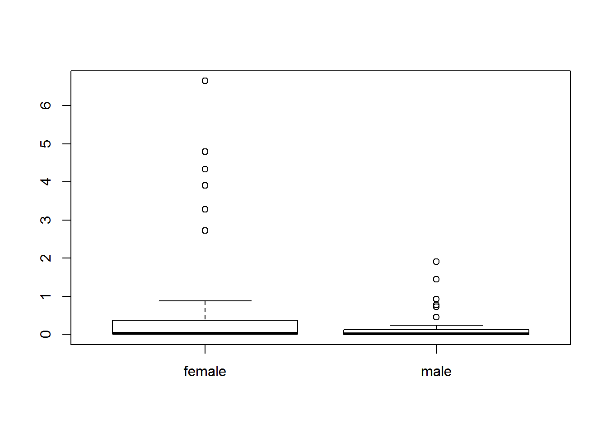
hist(dat$homerange)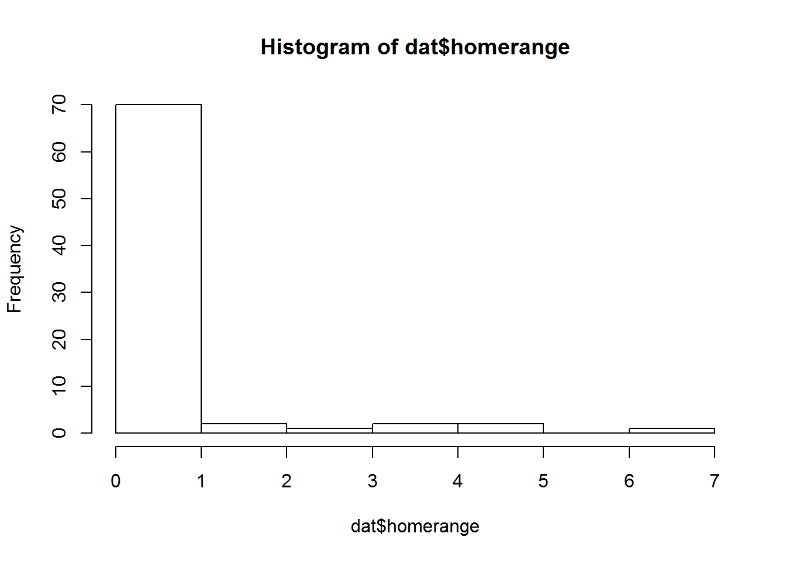
Ugggh. That does not look normal to me, but let’s go with it and fit a linear model and see what happens.
A basic linear model of a normally distributed variable
Let’s fit a linear model to some the data. Suppose we are interested in predicting whether female bears have larger or smaller home ranges than male bears and the associated uncertainty. The model for this can be recast as:
\[\mu = \beta_0 + \beta_1\cdot \text{Sex}+ \beta_2\cdot\text{Weight}+ \beta_3\cdot\text{Weight}\cdot\text{Sex} \]
where,
- \(\beta_0\) is the intercept of the model
- \(\beta_1\) is the effect of sex.
- \(\beta_2\) is the effect of weight.
- \(\beta_3\) is the interaction of sex and weight.
We can link the predictive model to the data using a statistical model. In this case we are assuming a normal distribution with some uncertainty quantified as \(\sigma\). Recall was specific this as:
\[Y_i \sim Normal(\mu,\sigma)\]
where
- \(\mu\) is the prediction
- \(\sigma\) is the standard deviation.
Now, I crafted this comparison deliberately to refine some understanding of R and linear models. First we need to examine the default way R treats categorical variables, like sex. We can figure out which factor is ‘first’ using the levels() function.
levels(dat$sex)## [1] "female" "male"Female is listed first then male. By default, R orders levels of categorical variables alphabetically. Let’s see how it is treated in a linear model.
fit<-lm(homerange~sex,data=dat) # fit the model
summary(fit) # model summary##
## Call:
## lm(formula = homerange ~ sex, data = dat)
##
## Residuals:
## Min 1Q Median 3Q Max
## -0.8386 -0.7388 -0.1778 -0.1012 5.8082
##
## Coefficients:
## Estimate Std. Error t value Pr(>|t|)
## (Intercept) 0.8393 0.1969 4.261 5.76e-05 ***
## sexmale -0.6595 0.2653 -2.486 0.0151 *
## ---
## Signif. codes: 0 '***' 0.001 '**' 0.01 '*' 0.05 '.' 0.1 ' ' 1
##
## Residual standard error: 1.165 on 76 degrees of freedom
## Multiple R-squared: 0.07523, Adjusted R-squared: 0.06306
## F-statistic: 6.183 on 1 and 76 DF, p-value: 0.0151coef(fit) # extract estimated coefficients## (Intercept) sexmale
## 0.8392535 -0.6595451betas<-coef(fit) # save betasThe estimate of the intercept is 0.839 and the effect of sex is -0.66. Notice the name of the effect of sex is called sexmale. This is the effect of being male on home range size. The intercept represents the expected home range of a female bear. The expected home range of a male bear is then 0.839+ -0.66 = 0.179 km, given this model. Recall we were interested in whether female bears had a larger or smaller home range. While you can evaluate with the model we fit, switching the order so male is the first level and would therefore be the intercept, would make sense. The second estimated coefficient is then the effect of being female. To do this we need to reorder the factor levels in R which can be done with the factor() function.
dat$sex<- factor(dat$sex,levels=c("male","female")) # reorder factor levelsNow let’s refit the same model and see what happens now.
fit<- lm(homerange~sex,data = dat)
summary(fit) # model summary##
## Call:
## lm(formula = homerange ~ sex, data = dat)
##
## Residuals:
## Min 1Q Median 3Q Max
## -0.8386 -0.7388 -0.1778 -0.1012 5.8082
##
## Coefficients:
## Estimate Std. Error t value Pr(>|t|)
## (Intercept) 0.1797 0.1777 1.011 0.3150
## sexfemale 0.6595 0.2653 2.486 0.0151 *
## ---
## Signif. codes: 0 '***' 0.001 '**' 0.01 '*' 0.05 '.' 0.1 ' ' 1
##
## Residual standard error: 1.165 on 76 degrees of freedom
## Multiple R-squared: 0.07523, Adjusted R-squared: 0.06306
## F-statistic: 6.183 on 1 and 76 DF, p-value: 0.0151coef(fit) # estimated coefficients## (Intercept) sexfemale
## 0.1797084 0.6595451Now the expected homerange for a male bear is the intercept and a female bear is 0.18+ 0.66 = 0.84 km, given this model. Compare the expected home range for a female bear with the intercept for the first model fit, the are the same. Formally, the model estimates 3 parameters:
- \(\beta_{0}\) = 0.18 this is the average home range of a male bear
- \(\beta_{1}\) = 0.66 the effect of being a female on home range
- \(\sigma\) = 1.165 residual standard error
Ok, now we also suspect there is an effect of weight on home range, larger bears have large home ranges. The effect of weight can be evaluated by adding weight to the linear model. The model parameters for this model are the same as before but there is a new parameter estimated, \(\beta_{2}\) which is the effect of weight on home range. Let’s fit the model.
fit<-lm(homerange~sex+weight+sex:weight,data=dat)
summary(fit)##
## Call:
## lm(formula = homerange ~ sex + weight + sex:weight, data = dat)
##
## Residuals:
## Min 1Q Median 3Q Max
## -1.5483 -0.2282 -0.0520 0.1814 3.9842
##
## Coefficients:
## Estimate Std. Error t value Pr(>|t|)
## (Intercept) -0.917105 0.538053 -1.704 0.0925 .
## sexfemale -3.772067 0.816939 -4.617 1.60e-05 ***
## weight 0.010143 0.004848 2.092 0.0398 *
## sexfemale:weight 0.041338 0.007396 5.589 3.61e-07 ***
## ---
## Signif. codes: 0 '***' 0.001 '**' 0.01 '*' 0.05 '.' 0.1 ' ' 1
##
## Residual standard error: 0.7948 on 74 degrees of freedom
## Multiple R-squared: 0.581, Adjusted R-squared: 0.564
## F-statistic: 34.2 on 3 and 74 DF, p-value: 5.623e-14coef(fit)## (Intercept) sexfemale weight sexfemale:weight
## -0.91710478 -3.77206675 0.01014257 0.04133752Well I’ll be the model fits pretty well. The r-squared value is 0.5809741 which is pretty good for ecological data, right? Either way the parameter estimates for the model are:
- \(\beta_{0}\) = -0.917 this is the average home range of a male bear
- \(\beta_{1}\) = -3.772 the effect of being a female on home range
- \(\beta_{2}\) = 0.01 the effect of weight on home range
- \(\beta_{3}\) = 0.041 the effect of weight on home range
- \(\sigma\) = 0.795 residual standard error
Making predictions from the model
Neat, we have fit a model that estimates home range given bear sex and weight. We can use the model to predict home ranges for male and female bears of varying weights. Let’s do that and see how good our model works, the anticipation is killing me! First we need a dataset of male and female bears to predict for. Bear weights vary from 68.9 to 157.3 and therefor we should predict between those values. Above or below those values you are getting into the realm of extrapolation.
newdat<- data.frame(weight=seq(min(dat$weight), max(dat$weight),1))
head(newdat)## weight
## 1 68.85462
## 2 69.85462
## 3 70.85462
## 4 71.85462
## 5 72.85462
## 6 73.85462But wait, don’t we need sex in the data.frame too? Right you are, let’s add it. We can do this by
newdat$sex<-"male"
preddat<- newdat
newdat$sex<-"female"
preddat<- rbind(preddat,newdat)Let’s double check the data to make sure it is formatted correctly.
str(preddat)## 'data.frame': 178 obs. of 2 variables:
## $ weight: num 68.9 69.9 70.9 71.9 72.9 ...
## $ sex : chr "male" "male" "male" "male" ...Hmmmm, that is not quite right. Sex is a character, it should be a factor. Let’s fix that.
preddat$sex<- factor(preddat$sex,levels=c("male","female"))
levels(preddat$sex)## [1] "male" "female"Ok, that looks better, especially the ordering of the levels. Now back to the fun stuff, let’s get predicting with the predict() function.
preddat$pred<- predict(fit,preddat)
head(preddat)## weight sex pred
## 1 68.85462 male -0.2187423
## 2 69.85462 male -0.2085997
## 3 70.85462 male -0.1984571
## 4 71.85462 male -0.1883146
## 5 72.85462 male -0.1781720
## 6 73.85462 male -0.1680294Now we can plot the predictions.
plot(pred~weight,preddat,type='n',xlab="Weight",ylab="Home range (km)")
points(pred~weight,preddat,subset=sex=="male",type='l',lty=1)
points(pred~weight,preddat,subset=sex=="female",type='l',lty=2)
legend('topleft',legend=c("Males","Female"),pch=c(1,2))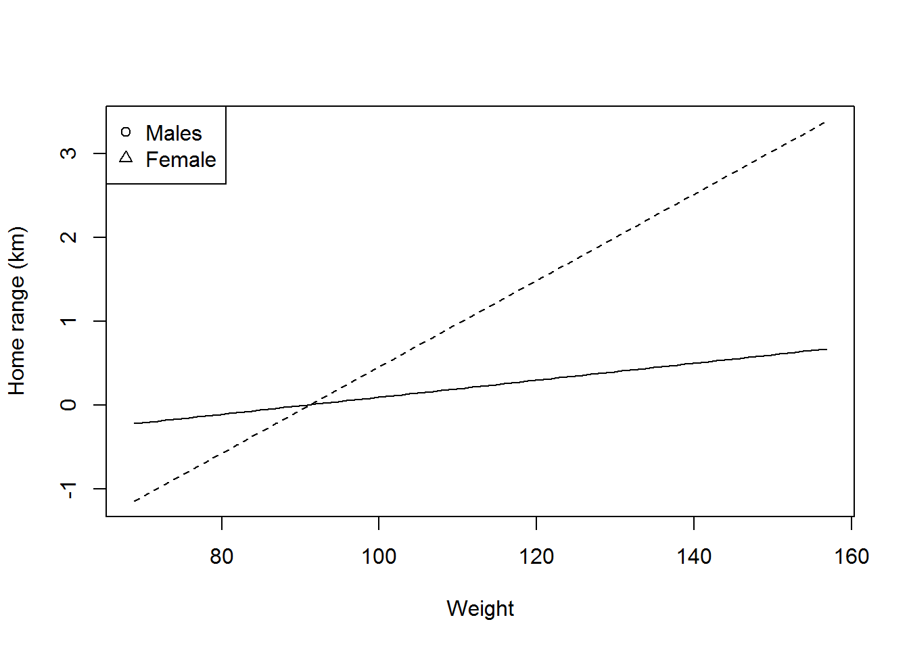
Ok, I am fisheries biologist not a rocket surgeon, but that does not seem right, how can home ranges be negative? Let’s plot it with the original data.
plot(homerange~weight,dat,type='n',xlab="Weight",ylab="Home range (km)",ylim=c(-1,10))
points(homerange~weight,dat,subset=sex=="male",pch=1)
points(homerange~weight,dat,subset=sex=="female",pch=2)
points(pred~weight,preddat,subset=sex=="male",type='l',lty=1)
points(pred~weight,preddat,subset=sex=="female",type='l',lty=2)
legend('topleft',legend=c("Males","Female"),pch=c(1,2))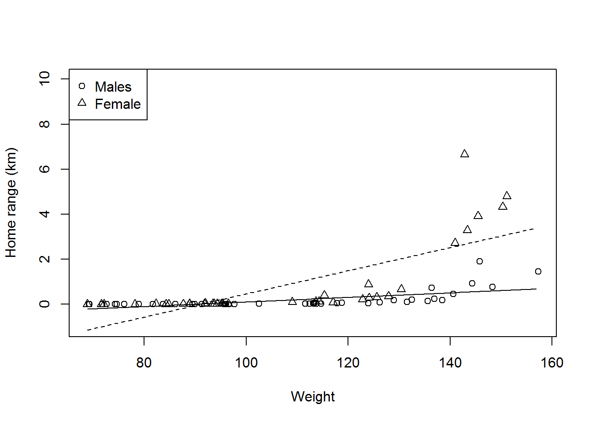
That is a terrible fit. But, the r-squared value was 0.5809741? I probably should have looked at the data first, but that is part of the point of this example. There are a couple of things that might be going on here. First, the distribution could be wrong. That data does not look all the normally distributed. Second, the model could be wrong and home ranges are not linearly related to sex and weight. We can evaluate these 2 problems with plots of residuals versus predicted to evaluate distribution and observed versus predicted values to evaluate if the model is misspecified. Here we go.
dat$resids<-resid(fit)
dat$preds<-fitted(fit)
# plot of residuals versus predicted
# should be normal and centered around 0
plot(resids~preds,dat)
abline(h=0)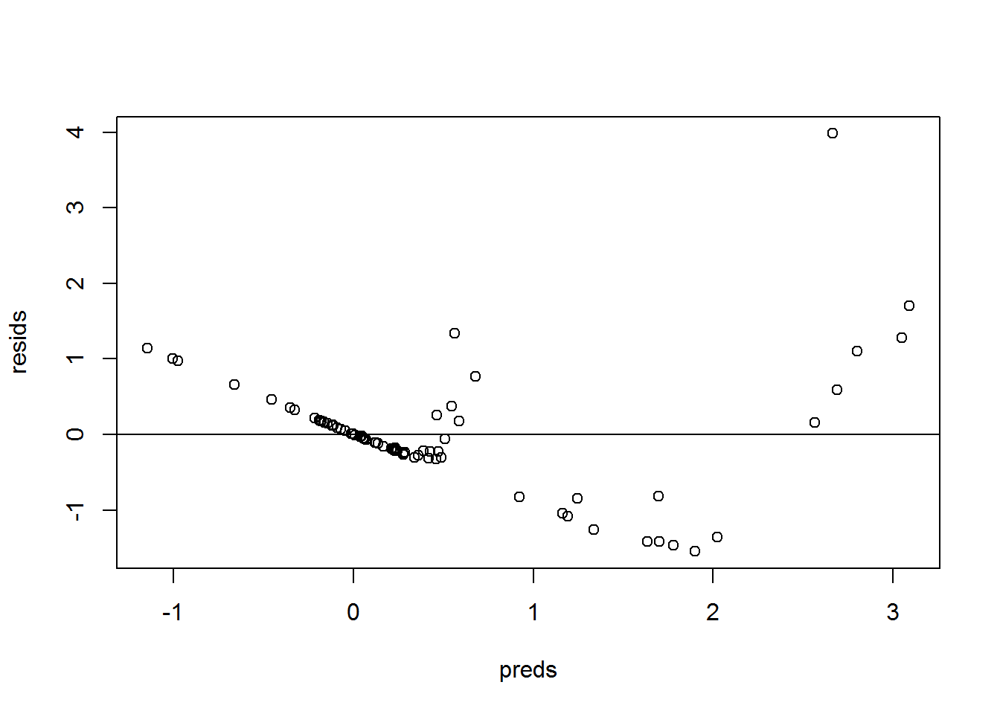
Well that does not good at all. The residuals are not centered around 0, the model tends to over predict at low values, under predict at intermediate values, and over predict at high values.
# plot of observed versus predicted
# should fall on a 1:1 line
plot(homerange~preds,dat)
abline(0,1)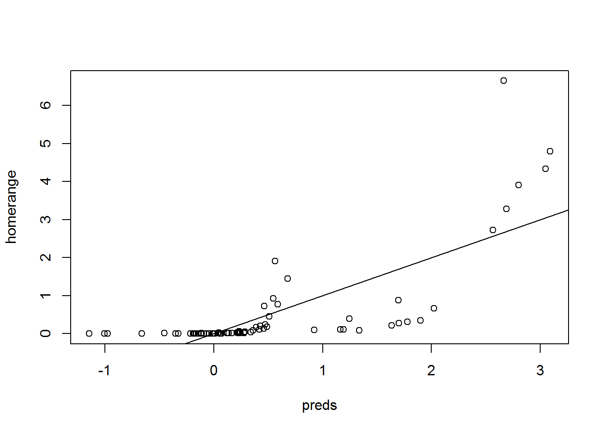
That does not look good at all either. The model appears to be misspecified and some unaccounted for curvature in the model. Let’s tackle the distribution issue to see if that fixes things.
Messing with the distribution
Some cool kids told me that a Poisson might be the way to go because it models things 0 or greater. Home ranges are greater than 0 and it makes good sense to not let home range dip below 0. A linear model with a Poisson distribution can be fit using the glm() function.
recast as:
\[log(\mu) = \beta_0 + \beta_1\cdot \text{Sex}+ \beta_2\cdot\text{Weight}+ \beta_3\cdot\text{Weight}\cdot\text{Sex} \]
where,
- \(\beta_0\) is the intercept of the model
- \(\beta_1\) is the effect of sex.
- \(\beta_2\) is the effect of weight.
- \(\beta_3\) is the interaction of sex and weight.
We can link the predictive model to the data using a statistical model. In this case we are assuming a normal distribution with some uncertainty quantified as \(\sigma\). Recall was specific this as:
\[Y_i \sim Poisson(\mu)\]
where
- \(\mu\) is the prediction
The Poisson distribution assumes that the uncertainty is equal to the mean. The syntax is similar to the lm() function.
fit<- glm(homerange~sex+weight+sex:weight,dat, family="poisson")## Warning in dpois(y, mu, log = TRUE): non-integer x = 0.002182## Warning in dpois(y, mu, log = TRUE): non-integer x = 0.874164## Warning in dpois(y, mu, log = TRUE): non-integer x = 0.218165## Warning in dpois(y, mu, log = TRUE): non-integer x = 0.279089## Warning in dpois(y, mu, log = TRUE): non-integer x = 3.906926## Warning in dpois(y, mu, log = TRUE): non-integer x = 0.307865## Warning in dpois(y, mu, log = TRUE): non-integer x = 0.000605## Warning in dpois(y, mu, log = TRUE): non-integer x = 0.005136## Warning in dpois(y, mu, log = TRUE): non-integer x = 0.349321## Warning in dpois(y, mu, log = TRUE): non-integer x = 0.111824## Warning in dpois(y, mu, log = TRUE): non-integer x = 0.669067## Warning in dpois(y, mu, log = TRUE): non-integer x = 0.079837## Warning in dpois(y, mu, log = TRUE): non-integer x = 0.010977## Warning in dpois(y, mu, log = TRUE): non-integer x = 4.794870## Warning in dpois(y, mu, log = TRUE): non-integer x = 0.009720## Warning in dpois(y, mu, log = TRUE): non-integer x = 3.280750## Warning in dpois(y, mu, log = TRUE): non-integer x = 0.020144## Warning in dpois(y, mu, log = TRUE): non-integer x = 0.028594## Warning in dpois(y, mu, log = TRUE): non-integer x = 0.003856## Warning in dpois(y, mu, log = TRUE): non-integer x = 0.019881## Warning in dpois(y, mu, log = TRUE): non-integer x = 0.011511## Warning in dpois(y, mu, log = TRUE): non-integer x = 0.024846## Warning in dpois(y, mu, log = TRUE): non-integer x = 0.015438## Warning in dpois(y, mu, log = TRUE): non-integer x = 0.001305## Warning in dpois(y, mu, log = TRUE): non-integer x = 0.005579## Warning in dpois(y, mu, log = TRUE): non-integer x = 2.721337## Warning in dpois(y, mu, log = TRUE): non-integer x = 0.395719## Warning in dpois(y, mu, log = TRUE): non-integer x = 4.331059## Warning in dpois(y, mu, log = TRUE): non-integer x = 6.647425## Warning in dpois(y, mu, log = TRUE): non-integer x = 0.002734## Warning in dpois(y, mu, log = TRUE): non-integer x = 0.096669## Warning in dpois(y, mu, log = TRUE): non-integer x = 0.012386## Warning in dpois(y, mu, log = TRUE): non-integer x = 0.014531## Warning in dpois(y, mu, log = TRUE): non-integer x = 0.112937## Warning in dpois(y, mu, log = TRUE): non-integer x = 0.007424## Warning in dpois(y, mu, log = TRUE): non-integer x = 0.720486## Warning in dpois(y, mu, log = TRUE): non-integer x = 0.001556## Warning in dpois(y, mu, log = TRUE): non-integer x = 0.001407## Warning in dpois(y, mu, log = TRUE): non-integer x = 1.444211## Warning in dpois(y, mu, log = TRUE): non-integer x = 0.447223## Warning in dpois(y, mu, log = TRUE): non-integer x = 0.034098## Warning in dpois(y, mu, log = TRUE): non-integer x = 0.084480## Warning in dpois(y, mu, log = TRUE): non-integer x = 0.004175## Warning in dpois(y, mu, log = TRUE): non-integer x = 0.037262## Warning in dpois(y, mu, log = TRUE): non-integer x = 0.004898## Warning in dpois(y, mu, log = TRUE): non-integer x = 0.038507## Warning in dpois(y, mu, log = TRUE): non-integer x = 0.172502## Warning in dpois(y, mu, log = TRUE): non-integer x = 0.028437## Warning in dpois(y, mu, log = TRUE): non-integer x = 0.002017## Warning in dpois(y, mu, log = TRUE): non-integer x = 0.244960## Warning in dpois(y, mu, log = TRUE): non-integer x = 0.000294## Warning in dpois(y, mu, log = TRUE): non-integer x = 0.004342## Warning in dpois(y, mu, log = TRUE): non-integer x = 0.198502## Warning in dpois(y, mu, log = TRUE): non-integer x = 0.060440## Warning in dpois(y, mu, log = TRUE): non-integer x = 0.001796## Warning in dpois(y, mu, log = TRUE): non-integer x = 0.019993## Warning in dpois(y, mu, log = TRUE): non-integer x = 0.027971## Warning in dpois(y, mu, log = TRUE): non-integer x = 0.134458## Warning in dpois(y, mu, log = TRUE): non-integer x = 0.002052## Warning in dpois(y, mu, log = TRUE): non-integer x = 0.924955## Warning in dpois(y, mu, log = TRUE): non-integer x = 1.904202## Warning in dpois(y, mu, log = TRUE): non-integer x = 0.000492## Warning in dpois(y, mu, log = TRUE): non-integer x = 0.003762## Warning in dpois(y, mu, log = TRUE): non-integer x = 0.000321## Warning in dpois(y, mu, log = TRUE): non-integer x = 0.001836## Warning in dpois(y, mu, log = TRUE): non-integer x = 0.104921## Warning in dpois(y, mu, log = TRUE): non-integer x = 0.004778## Warning in dpois(y, mu, log = TRUE): non-integer x = 0.017057## Warning in dpois(y, mu, log = TRUE): non-integer x = 0.000476## Warning in dpois(y, mu, log = TRUE): non-integer x = 0.052792## Warning in dpois(y, mu, log = TRUE): non-integer x = 0.000799## Warning in dpois(y, mu, log = TRUE): non-integer x = 0.769173## Warning in dpois(y, mu, log = TRUE): non-integer x = 0.000226## Warning in dpois(y, mu, log = TRUE): non-integer x = 0.181447## Warning in dpois(y, mu, log = TRUE): non-integer x = 0.000944## Warning in dpois(y, mu, log = TRUE): non-integer x = 0.029715## Warning in dpois(y, mu, log = TRUE): non-integer x = 0.013220## Warning in dpois(y, mu, log = TRUE): non-integer x = 0.000277What is going on with the warnings? That does not give me a warm fuzzy feeling about my analysis. Let’s see if the model was actually fit.
summary(fit)##
## Call:
## glm(formula = homerange ~ sex + weight + sex:weight, family = "poisson",
## data = dat)
##
## Deviance Residuals:
## Min 1Q Median 3Q Max
## -0.68998 -0.13150 -0.04767 -0.01447 1.87169
##
## Coefficients:
## Estimate Std. Error z value Pr(>|z|)
## (Intercept) -13.57659 4.10047 -3.311 0.00093 ***
## sexfemale 1.09791 4.77059 0.230 0.81798
## weight 0.09127 0.02848 3.205 0.00135 **
## sexfemale:weight 0.00359 0.03318 0.108 0.91382
## ---
## Signif. codes: 0 '***' 0.001 '**' 0.01 '*' 0.05 '.' 0.1 ' ' 1
##
## (Dispersion parameter for poisson family taken to be 1)
##
## Null deviance: 119.055 on 77 degrees of freedom
## Residual deviance: 8.356 on 74 degrees of freedom
## AIC: Inf
##
## Number of Fisher Scoring iterations: 6Well there are estimates for the various parameters of the model. Let’s be diligent and check the assumptions and make sure things are ok with our assumptions. I will start with the plot of residuals versus predicted values.
plot(resid(fit)~fitted(fit))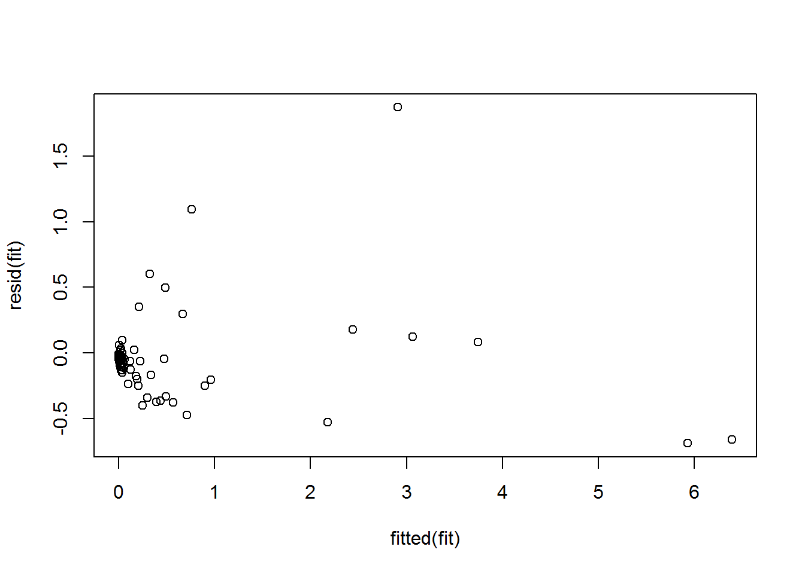
I don’t go chasing waterfalls that often, but that does not look good. Or maybe it does? The variance of the Poisson is the mean so you would expect some fanning of residuals as the home range increases.
Now, I hope the model is not misspecified. I will evaluate that by looking at a plot of observed versus the fitted values
dat$pred<- predict(fit,dat)
plot(homerange~pred,data = dat)
abline(0,1)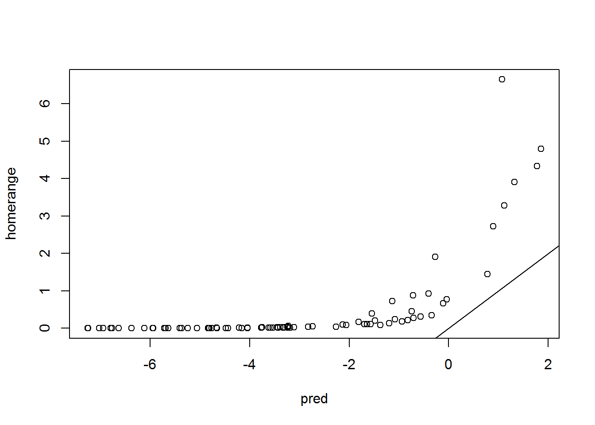
That model fit is atrocious. What is going on with the predictions? Why are they negative? Well it turns out that the glm() function uses a log link to model the response. So the predictions are on log scale and we need to transform them back to home ranges. The predict() function does this by specifying the type='response' argument. The defaulat is type='link'
dat$pred<- predict(fit,dat,type='response')
plot(homerange~pred,dat)
abline(0,1)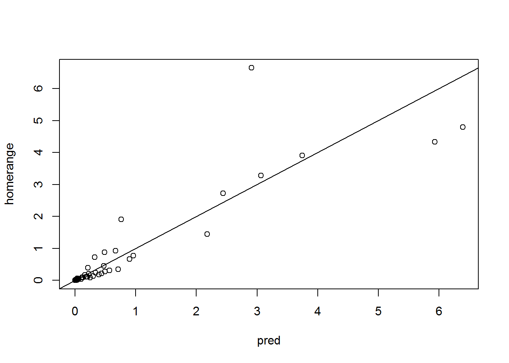
That looks a whole lot better. But I am still a concerned about all the warnings that happened during the model fitting. What is up with those. Let’s look at our data again.
head(dat)## X sex weight homerange resids preds pred
## 1 1 female 78.23331 0.002182498 0.6638967 -0.6617142 0.006359669
## 2 2 female 124.00695 0.874163579 -0.8205531 1.6947167 0.488764239
## 3 3 female 122.83473 0.218165462 -1.4162052 1.6343707 0.437330022
## 4 4 female 124.10415 0.279088639 -1.4206321 1.6997207 0.493291641
## 5 5 female 145.48238 3.906925690 1.1066516 2.8002741 3.747912212
## 6 6 female 125.62795 0.307864648 -1.4703017 1.7781663 0.570003540Ohhh, I think I see it. The Poisson distribution is only good for integers and home range is continuous. I wonder what happens is I round my home ranges to the nearest whole number and coerce it to an integer.
dat$hr_int<- as.integer(round(dat$homerange,0))Now let’s refit the model and see if the warnings persist.
fit<- glm(hr_int~sex+weight,dat, family="poisson")Awesome sauce, no warnings! 
It is always good to look at the model residuals and model fit.
dat$resid<-resid(fit)
dat$pred<-exp(fitted(fit))# response link
plot(hr_int~pred,dat)
abline(0,1)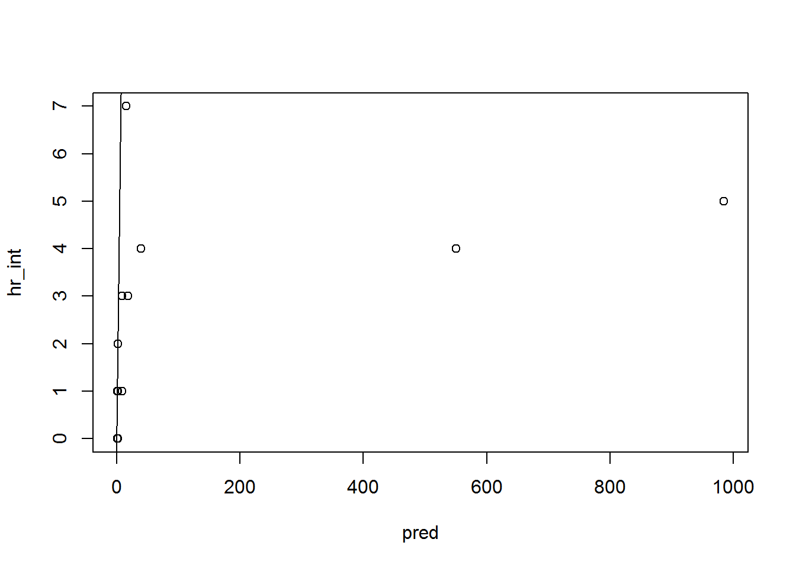
The plot of observed versus predicted looks pretty good if you exclude values greater than 200. It looks linear which is what we want. Now let’s look at the residuals.
plot(resid~pred,dat)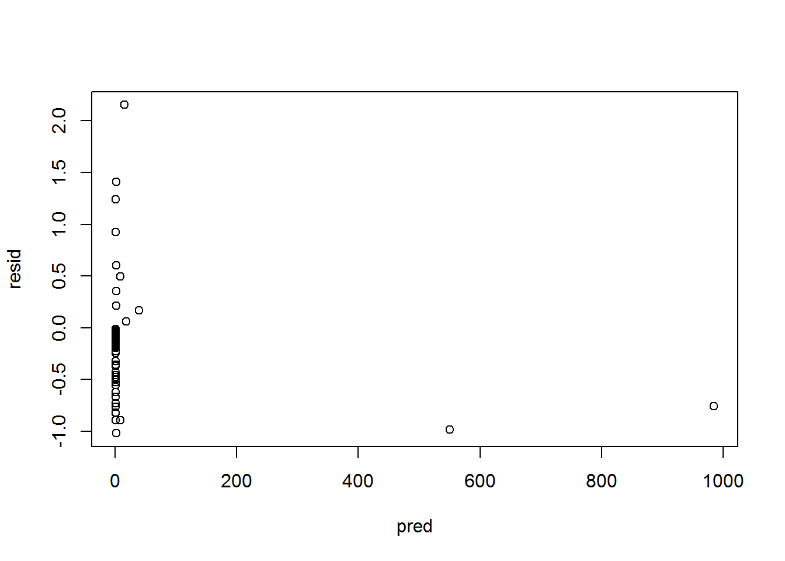
Ummm, that looks weird. First there are some home ranges that are predicted to be 0, or at least close to it. Second, what is up with the extreme residuals? Maybe a Poisson was not a great idea. Let’s go back and look at the data. Recall we coerced home range from a numeric to an integer. Maybe that hand an unintended consequence. Let’s look at the first 10 lines of the data.
head(dat,10)## X sex weight homerange resids preds pred hr_int
## 1 1 female 78.23331 0.0021824984 0.6638967 -0.6617142 1.002025 0
## 2 2 female 124.00695 0.8741635788 -0.8205531 1.6947167 1.397543 1
## 3 3 female 122.83473 0.2181654615 -1.4162052 1.6343707 1.341339 0
## 4 4 female 124.10415 0.2790886392 -1.4206321 1.6997207 1.402655 0
## 5 5 female 145.48238 3.9069256902 1.1066516 2.8002741 39.571092 4
## 6 6 female 125.62795 0.3078646484 -1.4703017 1.7781663 1.493461 0
## 7 7 female 68.85462 0.0006050199 1.1451349 -1.1445299 1.000710 0
## 8 8 female 88.92955 0.0051363679 0.1162073 -0.1110709 1.006697 0
## 9 9 female 127.94754 0.3493210952 -1.5482576 1.8975787 1.681382 0
## 10 10 female 114.28260 0.1118241467 -1.0822825 1.1941066 1.119703 0
## resid
## 1 -0.06360536
## 2 0.92648763
## 3 -0.76637850
## 4 -0.82263801
## 5 0.16548285
## 6 -0.89565210
## 7 -0.03768721
## 8 -0.11553811
## 9 -1.01942725
## 10 -0.47552794Recall we rounded homerange to the nearest integer and then coerced that value to an integer hr_int. Well that did have an unexpected effect. There are many home ranges that are 0. That seems biologically improbable for living bears.
What can we do? Well we can maybe convert home ranges to a number that is less likely to round to 0. For example we can convert square km to square m and then round those values to get whole numbers so the Poisson does not yell at us and throw a bunch of warnings again. Let’s go for it and see what happens.
dat$hr_mm<-dat$homerange*1000000
fit<-glm(hr_mm~sex+weight,dat,family="poisson")## Warning in dpois(y, mu, log = TRUE): non-integer x = 2182.498411## Warning in dpois(y, mu, log = TRUE): non-integer x = 874163.578845## Warning in dpois(y, mu, log = TRUE): non-integer x = 218165.461513## Warning in dpois(y, mu, log = TRUE): non-integer x = 279088.639234## Warning in dpois(y, mu, log = TRUE): non-integer x = 307864.648419## Warning in dpois(y, mu, log = TRUE): non-integer x = 605.019922## Warning in dpois(y, mu, log = TRUE): non-integer x = 5136.367883## Warning in dpois(y, mu, log = TRUE): non-integer x = 349321.095157## Warning in dpois(y, mu, log = TRUE): non-integer x = 111824.146719## Warning in dpois(y, mu, log = TRUE): non-integer x = 669066.922665## Warning in dpois(y, mu, log = TRUE): non-integer x = 79837.276777## Warning in dpois(y, mu, log = TRUE): non-integer x = 10976.754332## Warning in dpois(y, mu, log = TRUE): non-integer x = 9720.150411## Warning in dpois(y, mu, log = TRUE): non-integer x = 20143.742750## Warning in dpois(y, mu, log = TRUE): non-integer x = 28593.795033## Warning in dpois(y, mu, log = TRUE): non-integer x = 3856.014683## Warning in dpois(y, mu, log = TRUE): non-integer x = 19880.644250## Warning in dpois(y, mu, log = TRUE): non-integer x = 11511.129016## Warning in dpois(y, mu, log = TRUE): non-integer x = 24846.425059## Warning in dpois(y, mu, log = TRUE): non-integer x = 15437.602330## Warning in dpois(y, mu, log = TRUE): non-integer x = 1305.171791## Warning in dpois(y, mu, log = TRUE): non-integer x = 5579.247692## Warning in dpois(y, mu, log = TRUE): non-integer x = 395718.546010## Warning in dpois(y, mu, log = TRUE): non-integer x = 4331058.524404## Warning in dpois(y, mu, log = TRUE): non-integer x = 2733.719896## Warning in dpois(y, mu, log = TRUE): non-integer x = 96669.442904## Warning in dpois(y, mu, log = TRUE): non-integer x = 12385.788785## Warning in dpois(y, mu, log = TRUE): non-integer x = 14530.875347## Warning in dpois(y, mu, log = TRUE): non-integer x = 112937.133848## Warning in dpois(y, mu, log = TRUE): non-integer x = 7424.245213## Warning in dpois(y, mu, log = TRUE): non-integer x = 720486.320198## Warning in dpois(y, mu, log = TRUE): non-integer x = 1556.264520## Warning in dpois(y, mu, log = TRUE): non-integer x = 1407.328426## Warning in dpois(y, mu, log = TRUE): non-integer x = 1444210.592049## Warning in dpois(y, mu, log = TRUE): non-integer x = 447222.942421## Warning in dpois(y, mu, log = TRUE): non-integer x = 34097.635379## Warning in dpois(y, mu, log = TRUE): non-integer x = 84480.027616## Warning in dpois(y, mu, log = TRUE): non-integer x = 4175.261555## Warning in dpois(y, mu, log = TRUE): non-integer x = 37262.114716## Warning in dpois(y, mu, log = TRUE): non-integer x = 4897.835023## Warning in dpois(y, mu, log = TRUE): non-integer x = 38507.331976## Warning in dpois(y, mu, log = TRUE): non-integer x = 172502.267343## Warning in dpois(y, mu, log = TRUE): non-integer x = 28436.544805## Warning in dpois(y, mu, log = TRUE): non-integer x = 2017.277313## Warning in dpois(y, mu, log = TRUE): non-integer x = 244960.379671## Warning in dpois(y, mu, log = TRUE): non-integer x = 293.613871## Warning in dpois(y, mu, log = TRUE): non-integer x = 4342.087774## Warning in dpois(y, mu, log = TRUE): non-integer x = 198501.959092## Warning in dpois(y, mu, log = TRUE): non-integer x = 60439.960987## Warning in dpois(y, mu, log = TRUE): non-integer x = 1795.893259## Warning in dpois(y, mu, log = TRUE): non-integer x = 19992.654896## Warning in dpois(y, mu, log = TRUE): non-integer x = 27971.293019## Warning in dpois(y, mu, log = TRUE): non-integer x = 134458.154342## Warning in dpois(y, mu, log = TRUE): non-integer x = 2051.775483## Warning in dpois(y, mu, log = TRUE): non-integer x = 924955.242264## Warning in dpois(y, mu, log = TRUE): non-integer x = 492.496721## Warning in dpois(y, mu, log = TRUE): non-integer x = 3762.318690## Warning in dpois(y, mu, log = TRUE): non-integer x = 321.261925## Warning in dpois(y, mu, log = TRUE): non-integer x = 1836.291278## Warning in dpois(y, mu, log = TRUE): non-integer x = 104920.984773## Warning in dpois(y, mu, log = TRUE): non-integer x = 4778.385525## Warning in dpois(y, mu, log = TRUE): non-integer x = 17056.835916## Warning in dpois(y, mu, log = TRUE): non-integer x = 475.526602## Warning in dpois(y, mu, log = TRUE): non-integer x = 52792.438449## Warning in dpois(y, mu, log = TRUE): non-integer x = 798.535707## Warning in dpois(y, mu, log = TRUE): non-integer x = 769172.610076## Warning in dpois(y, mu, log = TRUE): non-integer x = 226.471925## Warning in dpois(y, mu, log = TRUE): non-integer x = 181446.636403## Warning in dpois(y, mu, log = TRUE): non-integer x = 943.691825## Warning in dpois(y, mu, log = TRUE): non-integer x = 29714.833612## Warning in dpois(y, mu, log = TRUE): non-integer x = 13219.933123## Warning in dpois(y, mu, log = TRUE): non-integer x = 276.950588Uggg, that didn’t work either. Maybe those cool kids were not as cool as I thought. You shouldn’t assume a variable is has a Poisson distribution if it is not an integer.
More messing with the distribution
Well, the link function for the Poisson was a log. It has some nice properties that when you take the anti-log (i.e., exp()) then you get a positive value. Let’s try it.
exp(-5)## [1] 0.006737947exp(2)## [1] 7.389056Neat, all values greater than 0! That makes biological sense as homerange should be greater than 0. So what if we simply take the log() of the homeranges?
dat$lhomerange<-log(dat$homerange)
# plot our transformed data
plot(lhomerange~weight, data= dat,
xlab="Weight",
ylab="ln(Homerange)",
type='n')
points(lhomerange~weight,data=dat,subset=sex=="male",pch=1)
points(lhomerange~weight,data=dat,subset=sex=="female",pch=2)
legend('topleft',legend=c("Males","Female"),pch=c(1,2))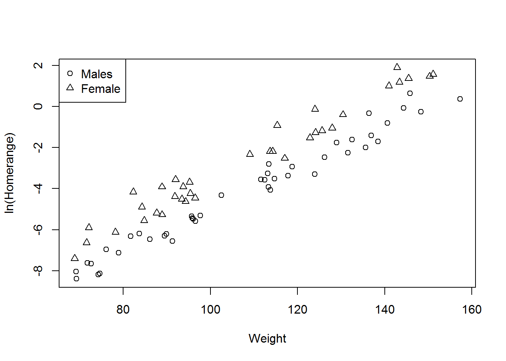
Well that looks a whole lot better. Let’s fit a linear model and see how that goes. Formally the linear model, or log-linear model in this case is recast as:
\[log(\mu) = \beta_0 + \beta_1\cdot \text{Sex}+ \beta_2\cdot\text{Weight}+ \beta_3\cdot\text{Weight}\cdot\text{Sex} \]
where,
- \(\beta_0\) is the intercept of the model
- \(\beta_1\) is the effect of sex.
- \(\beta_2\) is the effect of weight.
- \(\beta_3\) is the interaction of sex and weight.
We can link the predictive model to the data using a statistical model. In this case we are assuming a normal distribution with some uncertainty quantified as \(\sigma\). Recall was specific this as:
\[log(Y_i) \sim Normal(log(\mu),\sigma)\]
where
- \(log(\mu)\) is the log of prediction
- \(\sigma\) is the standard deviation.
Note here we are working on log scale so we need to log transform our observed data.
fit<- lm(lhomerange~weight+sex+weight:sex,data=dat)
dat$pred<- fitted(fit) # add predictions to dataset
dat$resid<- resid(fit) # add residuals to datasetLet’s check the plot of residuals versus predicted values.
plot(resid~pred,data=dat)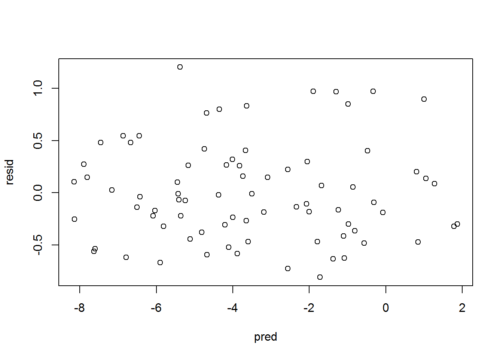
Cool, that looks legit. Now let’s check the model structure.
plot(lhomerange~pred,data=dat)
abline(0,1)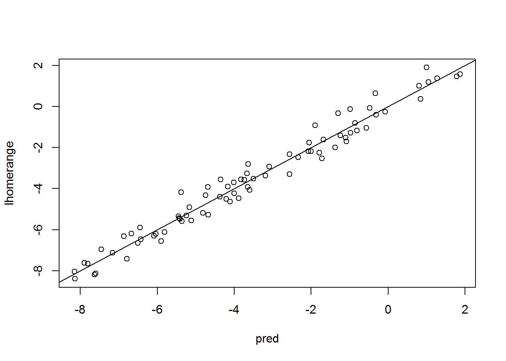
That curvature we saw before is gone, looks linear to me. Now we can get to the good stuff. The betas and the uncertainty.
summary(fit)##
## Call:
## lm(formula = lhomerange ~ weight + sex + weight:sex, data = dat)
##
## Residuals:
## Min 1Q Median 3Q Max
## -0.80973 -0.32145 -0.07055 0.26493 1.20457
##
## Coefficients:
## Estimate Std. Error t value Pr(>|t|)
## (Intercept) -15.216567 0.323482 -47.040 <2e-16 ***
## weight 0.102077 0.002914 35.024 <2e-16 ***
## sexfemale 1.173290 0.491150 2.389 0.0195 *
## weight:sexfemale 0.003224 0.004447 0.725 0.4707
## ---
## Signif. codes: 0 '***' 0.001 '**' 0.01 '*' 0.05 '.' 0.1 ' ' 1
##
## Residual standard error: 0.4779 on 74 degrees of freedom
## Multiple R-squared: 0.9699, Adjusted R-squared: 0.9687
## F-statistic: 795.3 on 3 and 74 DF, p-value: < 2.2e-16Boy that is a pretty good fit!
betas<- coef(fit)
betas## (Intercept) weight sexfemale weight:sexfemale
## -15.216566841 0.102076727 1.173290169 0.003224222sigma<- summary(fit)$sigma
sigma## [1] 0.4778583That sigma is a bit high, the sigma in this case is the same as the coefficient of variation. Because of the log transformation the variance increases with the mean (i.e., predicted value). Let’s make some predictions using the predict() function. Recall we made preddat to predict values for earlier?
preddat$pred<- predict(fit, preddat)Oh, I can’t wait, lets look at our predictions!
head(preddat)## weight sex pred
## 1 68.85462 male -8.188113
## 2 69.85462 male -8.086036
## 3 70.85462 male -7.983959
## 4 71.85462 male -7.881883
## 5 72.85462 male -7.779806
## 6 73.85462 male -7.677729What is going on? The homeranges are negative? Oh I remember we did a log transformation so the predicted values are on log scale. We need to take the antilog using the exp() function.
preddat$pred<- exp(preddat$pred)
head(preddat)## weight sex pred
## 1 68.85462 male 0.0002779379
## 2 69.85462 male 0.0003078075
## 3 70.85462 male 0.0003408871
## 4 71.85462 male 0.0003775217
## 5 72.85462 male 0.0004180933
## 6 73.85462 male 0.0004630252Those values look more like it. Now we can put it all together and see what we have going on.
plot(homerange~weight, data= dat,
xlab="Weight",
ylab="Homerange(km)",
type='n')
points(homerange~weight,data=dat,subset=sex=="male",pch=1)
points(homerange~weight,data=dat,subset=sex=="female",pch=2)
points(pred~weight,data=preddat,subset=sex=="male",type='l',lty=1)
points(pred~weight,data=preddat,subset=sex=="female",type='l',lty=2)
legend('topleft',legend=c("Males","Female"),pch=c(1,2))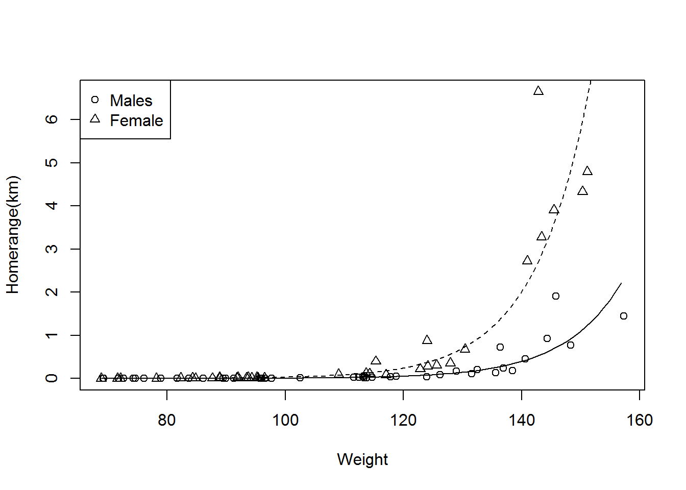
Ok, it all looks great. Now we can move on and get our coefficients and uncertainty.
betas## (Intercept) weight sexfemale weight:sexfemale
## -15.216566841 0.102076727 1.173290169 0.003224222sigma## [1] 0.4778583Now the key here is that with the interaction of a factor (sex) we need to combine the betas so we essentially 2 equations. The model for males is
\[exp(\beta_0 + \beta_1 \cdot \text{Weight})\]
and females is
\[exp((\beta_0+\beta_2) + (\beta_1+\beta_3)\cdot\text{weight}).\]
The parameterized models are:
- Males: \(exp(-15.22+0.102\cdot \text{Weight})\)
- Females: \(exp(-14.04+0.105\cdot \text{Weight})\)
Linear model misconceptions and assumptions
Couple of common misconceptions I have run into in the understanding of linear models
- The covariates need to be normally distributed - FALSE
- The response variable needs to be normally distributed - FALSE the model residuals do though!
There are some assumptions that need to be addressed though:
- The response variable is linearly related to the model
- The residuals are normally distributed - but this can be modified by assuming different distributions
- Distributional variances conform to assumptions
These assumptions can be evaluated by visually inspecting the following plots
- Plot of response variable (y-axis) to predicted variables (x-axis)
- Plot of residuals (y-axis) to predicted variables (x-axis)
Now that we have a fitted model we can evaluate the assumptions. It is usually best to do this before looking at the output. R has some built in plots that can be viewed using the code plot(fit) but I prefer to do a couple of simple plots to assess model assumptions.